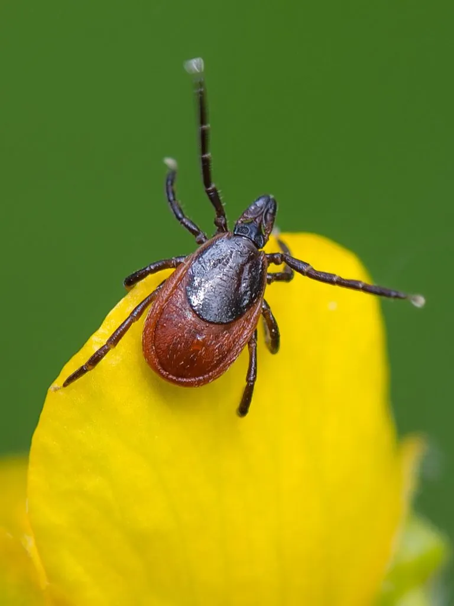

蛛形动物 · 动物界
全沟硬蜱 Ixodes persulcatus

东北和新疆林区常见的硬蜱，吸血后体积可膨胀数十倍，是森林脑炎与莱姆病的重要传播媒介，户外需做好防护。
- 分类
- 门节肢动物门纲蛛形纲目蜱目科硬蜱科属硬蜱属
- 栖息环境
- 针阔混交林、林缘、灌木丛与林间草甸
- 地理分布
- 中国东北、新疆的林区，以及欧亚大陆北部森林带
- 保护级别
- IUCN 暂无评估；中国未列入国家重点保护名录
物种志
全沟硬蜱未吸血时雌蜱体长 3–4 毫米，雄蜱约 2–3 毫米，身体扁平呈椭圆形，头胸部与腹部愈合，背面有坚硬的盾板，足末端有爪和吸盘；吸饱血后雌蜱可胀大到 10 毫米以上，呈灰蓝色球状。它一生经过卵、幼蜱、若蜱和成蜱四个阶段，每个吸血阶段都要寻找哺乳动物、鸟类或爬行动物作为宿主。
它分布于欧亚大陆的针阔混交林与森林草原，在中国主要见于东北大兴安岭、小兴安岭、长白山以及新疆的林地。成蜱多在春季和初夏活动，常爬到草叶尖端等待宿主经过，通过感知二氧化碳和体温定位目标。全沟硬蜱是森林脑炎病毒和莱姆病螺旋体的重要传播媒介，被叮咬后可能发热、出现游走性红斑，需及时就医并正确拔除蜱虫；进入林区应穿浅色长袖长裤、扎紧裤脚并涂抹驱虫剂。
形态与习性
- 食性吸血，宿主包括哺乳动物、鸟类和爬行动物
- 体长未吸血雌蜱 3–4 mm，吸饱血可达 10 mm 以上
- 寿命完成一代约需 2–3 年
- 繁殖卵生，雌蜱吸饱血后产卵数百至上千枚
- 活动节律春季至初夏为成蜱活动高峰
- 危害传播森林脑炎和莱姆病，叮咬后可能发热
趣味知识
- 全沟硬蜱吸血后体积可膨胀数十倍，从米粒大小变成黄豆甚至更大。
- 它常守在草叶尖端，感知到二氧化碳和体温后迅速攀附到路过的动物身上。
- 被蜱虫叮咬后不要硬拽，应用镊子贴近皮肤缓慢拔出并观察身体反应。